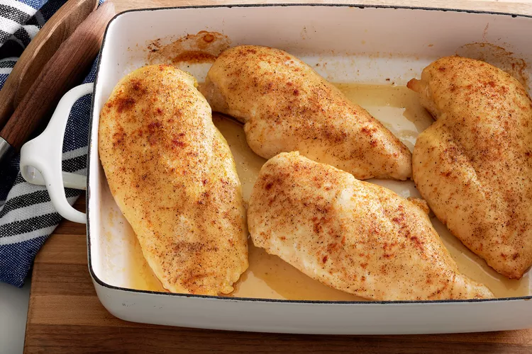

Simple Baked Chicken Breasts

Simple Baked Chicken Breasts Ingredients
Learn how to bake chicken that's tender, juicy, and perfect every time with this simple, 5-ingredient recipe for boneless, skinless chicken breasts. Adding just a bit of chicken broth to those beautiful pan drippings creates a tasty pan sauce that adds extra flavor at the table.
Everyone needs a tried-and-true recipe for simple baked chicken in their back pocket. On the hunt for the perfect one? We've got you covered with this top-rated recipe for baked chicken breasts. It's versatile, universally crowd-pleasing, and (best of all) incredibly easy.
Ingredients
- 4 (5 ounce) skinless, boneless chicken breasts halves
- 2 tablespoons olive oil
- ½ teaspoon coarse sea salt, or to taste
- 1 pinch Creole seasoning (such as Tony Chachere's®), or more to taste
- 1 tablespoon chicken broth, or more to taste
- Preheat the oven to 400 degrees F (200 degrees C).
- Rub chicken breasts with olive oil and sprinkle both sides with salt and Creole seasoning. Place chicken in a broiler pan.
- Bake in the preheated oven for 10 minutes. Flip chicken and cook until no longer pink in the center and the juices run clear, about 15 minutes more. An instant-read thermometer inserted into the center should read at least 165 degrees F (74 degrees C).
- Remove chicken to a plate
- Pour chicken broth into the pan and scrape any browned bits off the bottom with a flat-edged wooden spatula. Add more broth if needed to dislodge the browned bits, but not too much or it will be watery.
- To serve, drizzle the pan sauce over the chicken.
Tips
You can use water instead of chicken broth for the pan sauce.